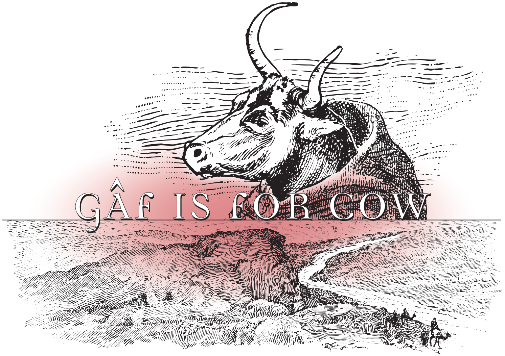
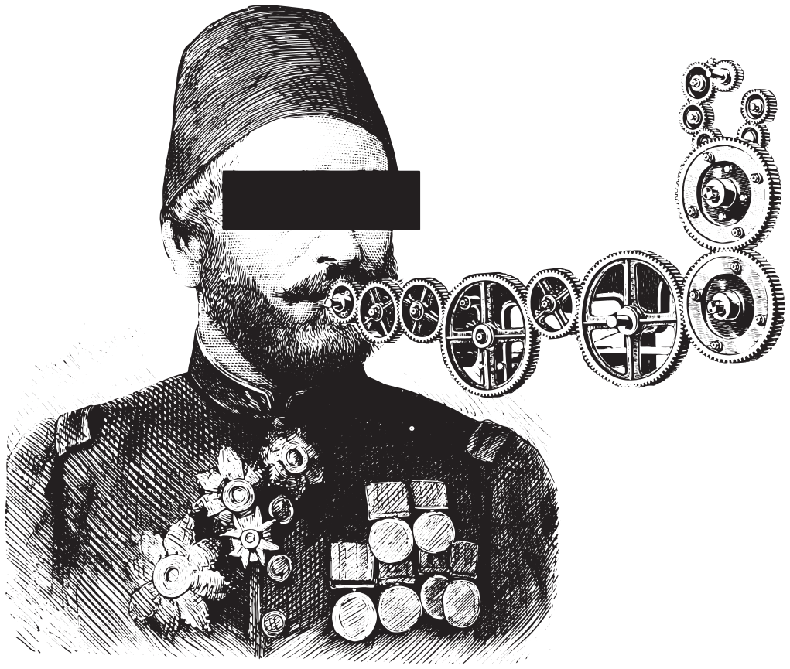
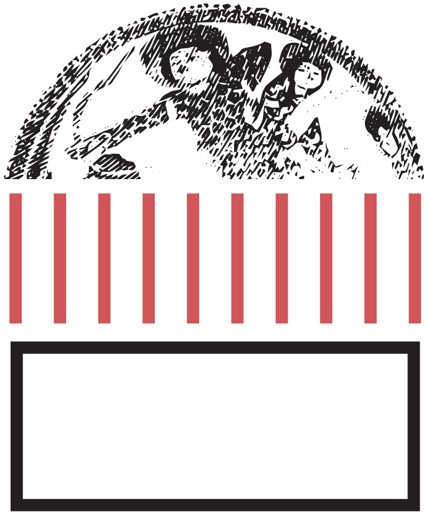
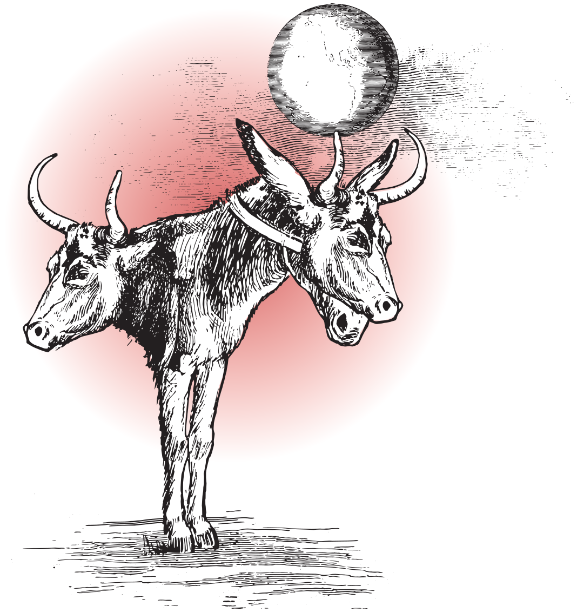
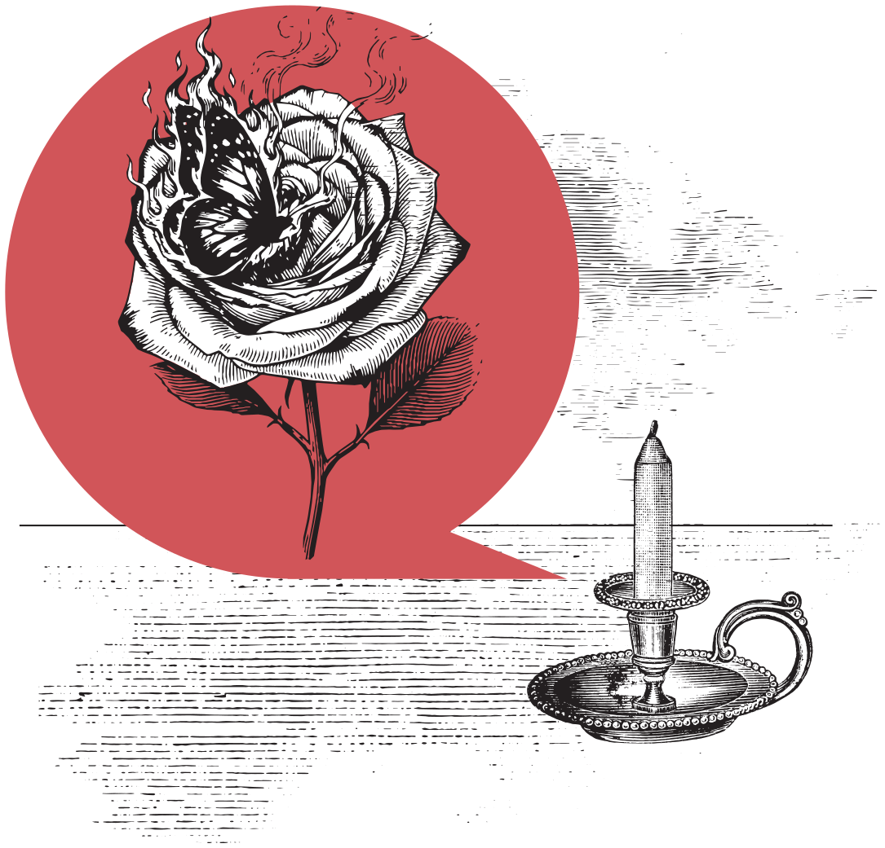

The Arabic Alphabet: A Guided Tour
by Michael Beard
illustrated by Houman Mortazavi

Gâf is for cow
The sound is the voiced counterpart of K, matched by the appearance of the letter. If we think of the sound of G as a thickened K sound, adding another spar up there to the spindly shape of Kâf, changing ک to گ, that second sarkesh above the first gives the letter a little heft. An earlier version of Gâf was a Kaf with three dots overhead, which has more or less the same result.
There was a time when the three-dotݣ was the more common way to change a K to a G. William Jones’s Grammar of the Persian Language (1809) suggests using either. In Ottoman Turkish ݣ represented the NG sound. It’s still used that way in Uighur, Kirgiz, Turkmen and probably others.
گ exists in Persian, Ottoman Turkish, Urdu, Pashto, Sorani & Kurmanji Kurdish, Uighur, Pegon, Jawi, and other scripts about which I know nothing except the fact that they exist, if that. What with the absence of a hard G sound in Arabic (with dialectical exceptions) you won’t find the letter Gâf there. Kâf alone suits them fine.
Persian speakers, though they had the sound, got along without the letter Gâf for a long time. Clearly, it was easy enough to use the naked ک / ك for two sounds. We do the same thing in English when we use C for two sounds (for a K or an S), or, for that matter, as we do with the letter G (our Gaf equivalent, whose name is pronounced Jee).
When Arabic takes in a G word as a loan, the word itself is likely to change. One possible substitute is Jim. “Google” (Persian گوگل) becomes جوجل.The Persian word گوهر, gowhar, essence, true inner nature of something, also a jewel, became in Arabic جوهر , jawhar. Later it was borrowed back into Persian, so today in Persian dictionaries you will find both jowhar and gowhar, meaning as nearly as I can determine, the same thing.
Loan words and loan names like Chicago (which has two non-Arab sounds, both G and CH) require some ingenuity: sometimes the substitute is Ghayn, thus شیکاغو, which becomes Shikaghu, different but perfectly recognizable. “Cigarette” (Persian sigâr) is sijâra, سجارة, with a Jim. Pythagoras is Fithâghûras, فيثاغورس, with a Ghayn.
Gaf word گیج, gij, is “dizzy.” Gâf is for گم, gom, “lost.” Gomnâm , گمنام, is “unknown,” “obscure.” Gardesh, گردش, is rotation, or circulation, but also an excursion or promenade, going for a walk, just wandering. The gard part is linked etymologically with gerd, “round,” thus “walking around.” Think of gardesh as the emblem for activity without a goal, something like French flânerie, to wander with no particular destination and nothing to gain. An approximate equivalent in Turkish is gezmek, “to wander,” source of gezeğen, a planet, because planets seem to wander when seen in comparison to the motions of the fixed stars. The English word “planet” of course follows the same logic (from Greek plánēs, πλάνης, wandering).
Gomrok (Turkish gümrük), “customs” (originally a term for a custom house), is the source for a word which visitors to Iran are likely to encounter early, crossing a border or getting out of the airport. The Arabic equivalent is jumruk (the 4-consonant stem, J-M-R-K, tipping us off to the possibility of a loan word, which it is). Logic says that the chain of borrowings follows Turkish, and that Turkish picked it up from Greek κομμέρκιον. Kommérkion has generated successors in the other direction (through Latin commercium). In fact, Gümrük is cognate with the English “commerce.”
Gâf word گران, gerân, means “expensive.” A geru, گرو, is a pledge, a pawn, a deposit. Ganj, گنج, means “treasure.” The Persian proverb says “Hich ganj bidun-e ranj,” ranj being “exertion,” “pains”: There’s no treasure without working for it, i.e. no gain without pain. (At one time the National Bank, Bânk-e Melli, had a slogan – if I remember correctly-- ganj bidun-e ranj. Approximately “treasure without pain.”)
There is an Arabic word, kanz, meaning the same thing. It was at one time, early in the history of the language, a loan word from Persian, Old Persian, borrowed so early that the Arabic form had time to develop a proper stem, triliteral K-N-Z, meaning “to bury, to accumulate, to hoard.” It occurs in the Qur’ân (notably in Al-Kahf, “The Cave,” in that strange and beautiful parable of the treasure buried below the crumbling wall (18.82).
The Old Persian word also migrated as a loan word to Greece, where it became gáza (γáζα), treasure, royal wealth, and there too sounded so Greek it was expanded to gazofulákion (γαζοφυλáκιον), the royal treasury. It was already established by the time of the Gospel of John, where, for instance, Jesus has a debate with the Pharisees in front of the γαζοφυλáκιον (John 8.20).

English Ganja is a plant, the word for which, I had always assumed, came from the Persian ganj, plus a suffix. I was disappointed to learn that Yule, in Hobson-Jobson, a trustworthy source, traces it to an unrelated Hindi word, gânjhâ. A friend says it isn’t Indo-European at all: that it came to Hindi from a Dravidian stem. Sneaky, elusive borrowings: linguistic equivalent of the drug trade.
Another Ganja (گنجه, Ganjeh) is more familiar, a city in Azerbaijan, whose name is said to come from the word ganj. The 12-century poet Nizami is Nizami-ye Ganjavi because he was born there.
Back Home
It would be difficult to determine if Gâf wordگبر, gabr, represents the familiar or the exotic. In Persian it means a Zoroastrian, a member of a minority community, thus “outside,” but a community definitive of Iranian culture (thus “inside”). It is the origin of the English word “geber” or French guebre. There is a tradition that it comes from Arabic kâfir (unbeliever), but it doesn’t seem likely. If kâfir had migrated into Persian from outside, there would have been no particular reason for a K word to change to a G. Persian speakers have no trouble pronouncing the Arabic K.
English “giaour” (as in Byron’s endless poem “The Giaour: Fragment of a Turkish Tale” -- 1813) more frequently means non-believers in general, but “giaour” also traces back to gabr, presumably though the intermediary of Turkish gâvur. The earliest stem I can find is an Aramaic word meaning “man.” Perhaps in Old Persian it just meant a human. It didn’t have to mean a Zoroastrian. Not if everyone had the same religion.
Thomas Moore’s Lallah Rookh, (1817), his influential, and in its way beautiful imitation of a Persian story cycle, includes a romance, half prose, half verse, with his understanding of a Zoroastrian theme (“The Fire Worshippers”). His imagined Zoroastrian temple (“the ruins of a strange and awful-looking tower, which seemed old enough to have been the temple of some religion no longer known”) comes across more like a skyscraper than a building we might actually run into, but he carries off the exaggeration.
...on its peak that brav'd the sky,
A ruin'd Temple tower'd, so high
That oft the sleeping albatross[39]
Struck the wild ruins with her wing,
And from her cloud-rock'd slumbering
Started—to find man's dwelling there
In her own silent fields of air!
Like the gabr, springing from Iranian soil, there is a series of Gâf plants, most of them edible: they include cherries (gilâs), plums (gujeh), walnuts (gerdu) and pears (golâbi). Without that î- suffix, golâb is rosewater, source of the English word “julep.” A giyâh is a plant. Mehr-giâh is the mandrake (also called a mard-giyâh, “man-plant,” which seems more reasonable). Gaz is a tamarisk. Gel is mud or clay.
Gâf animals may not be beautiful, but they are often edible. A galleh is a flock or herd. A galleh-bân is a herdsman or shepherd. Gusht is meat. A gusfand is a sheep, the default gusht. A gorâz is a wild boar, edible outside the Islamic world. Within it, it is in the category of a gorg, a wolf, an animal which is just trouble. You wouldn’t eat it unless you were desperate, perhaps not even then.The gorbeh, “cat,” may fit into this category too. A gush is an ear: khargush (donkey-ears) is a rabbit. A gâmish, گامیش, is a water buffalo (source of Arabic جاموس, jâmus).
Training
A gur is a wild ass, often translated as onager. Sasanian king Bahram the 5th (420-38 CE) came eventually to be called, folklorically, Bahrâm-e Gur (Bahram of the wild ass), because traditionally he is remembered as a hunter. He shows up in Ferdowsi’s Shâhnâmeh, and more importantly (or more beautifully) he is the subject of a great 12th-century romance the Haft Paykar (Seven beauties) by Nizami Ganjavi. In Persian Bahram is described by his relation to a gur. In one of Omar Khayyam’s demonstrations that even the heroes of history pass away, the examples are Jamshid and Bahram.
آن قضر که جمشید در او جام گرفت
آهو بچه کرد و رو آرام گرفت
بهرام که گور میگرفتیی همه عمر
دیدی که چگونه گور بهرام گرفت؟Ân qaṣr keh Jamshid dar u jâm gereft
Âhu bachcheh kard o ru ârâm gereft.
Bahrâm keh gur migerefti hameh ‘omr --
Didi keh cheguneh gur Bahrâm gereft?In the palace where Shah Jamshid raised his cup
the fox has come to rest and the gazelle has given birth.
And Shah Bahram who hunted the wild ass all his life
has at last been snared in the wilds by death. – trans. Karim Emami
(It’s FitzGerald’s “They say the lion and the lizard keep . . .”)]

Bahram – who always liked to hunt (mi-gerefti) the gur-- today the gur has hunted down (gereft) Bahram. Gur has another meaning: a grave. So Bahram hunts one gur; the other gur hunts him.
A gâv is an ox (or bull) or cow. It’s easy to spot as a cognate of English “cow.” It’s also one of those words which remind us of a gap in English. We have “bull” and “cow,” but nothing gender neutral. (The scientific category is “cattle,” under the genus bos. I’m told that bos, as in Latin bos / bovis is also derived from gâv. And, with a change of vowels, so is “beef.”)
Bulls are popular in the mythologies of the world--the descent of the bull from heaven (Gu-gulanna) in Gilgamesh, the sanctity of the cow in Hinduism, the power of Niú Mówáng (牛魔王), Monkey’s opponent in the 16th-century classic Journey to the West. They’re all over the place in Greek mythology (remembering that Europe is named after a woman who traveled the continent on the back of a bull): add to the list a bull, a cosmic bull in Old Persian, with the important task of holding up the earth on his head, while standing on a giant fish.

Poets remembered that bull long after anyone believed in it, There’s a folk quatrain often, for some reason, attributed to Omar Khayyam (it isn’t by him– it doesn’t even sound like him, and it didn’t fool FitzGerald, who didn’t translate it), a quatrain which observes that we have two bulls, one in the sky and one in below the earth. The quatrain leaves out the fish and sees creation in terms of livestock:
گاویست در آسمان و نامش پروین
یک گاو دگر نهفته در زیر زمین
چشم خردت باز کن از روی یقین
زیر و زبر دو گاو مشتی خر بینGâv-ist dar âsmân o nâm-esh Parvîn
Yek gâv-e degar nohofteh dar zir-e zamin.
Cheshm-e kherad-at bâz kon az ru-ye yaqin
Zir o zir dow gâv moshti khar bin.There’s one bull in the sky, we call Parvin (the Pleiades, synecdoche for Taurus), another underneath the earth. Open the eyes of your reason and you will be sure to see, between those two bulls, it’s mostly just asses.
The word gur gave Bahram-e Gur his epithet, but there is also a gâv in his story which is more interesting. It’s generated by the sport of hunting which gave him his epithet. As Niẓâmi tells it (in the Haft Paykar ), Bahrâm has a slave girl (kaniz) named Fetna (yes, that equivocal ف name), who accompanies him on a hunt. She’s unimpressed with his skills (described at length in the story), or at least she says perfectly reasonable, neutral things about them -- instead of flattery. (She suggests his accomplishments are the result of practice, not innate skill.) Bahrâm, evidently a stern master, asks an officer or courtier (sarhang) to execute her, but the sarhang is more merciful than Bahram and lodges her in a tower instead. What happens next is what makes the story interesting. Like an inmate working out in the prison yard, she picks up a newborn calf, easy enough to accomplish, and carries it up and down the tower stairs. She does this every day. Bahram doesn’t discover her until six years have passed, long enough for a gâv to reach full size.
گوسالهای را به هر روز برمیگرفت
چون گاو شدش، به یکبارگی برمیگرفتGusâleh-î râ beh har ruz bar mi-gereft
Chun gâv shodesh, beh yek bâregi bar mi-gereft.Day after day she did not quit
this practice but continued it,
until--the calf an ox become
of six years’ age – her task was done . . .
(from the late Julie Miesami’s beautiful translation in English tetrameters)
After six years of carrying it up the tower stairs every day, in an episode which feels peculiarly modern, the increasing load has stimulated hypertrophy and she’s strong enough to lift a full-grown ox up the stairs. Bahram hears about a woman who can accomplish this (not knowing it’s Fetneh) and goes to witness the spectacle.
Logically, Nizami associates her with the constellation of the gâv. When she prepares herself for his visit to the tower, she suits up in the standard fashion. She is the moon; her pearls are that cluster of stars located in Taurus:
قدّ چو سرو از مروارید آراست
عقدِ ثُریّا بر مهِ گردن ببستQadd chu sarv az morvârid ârast –
’aqd-e Thorayyâ bar mah-i gardan be-bast.She decked with pearls her cypress form;
bound Pleiad’s necklace to the moon. – trans. J M
And when she hoists the gâv, Taurus still looks on.
پیش آن گاو رفت چون مه بَِِدْر
ماه در برج گاو یابد قدر
سر فرو برد و گاو را برداشت
گاو بین تا چگونه گوهر داشتPish-e ân gâv raft chun mah-e badr
Mâh dar borj-e gâv yâbad qadr.
Sar foru bord-o gâv-râ bar dâsht –
Gâv bin tâ cheguneh gowhar dâsht.Like a full moon drew near the ox:
the Moon finds strength in Taurus’ house.
She bent her head and raised the ox:
see what a jewel adorned that beast.
--trans. J M. (“Taurus’ house” is borj-e gâv the astrological house of Tauras.
Her accomplishment concludes the debate about the virtue of practice. It doesn’t strictly speaking prove that Behram’s skill isn’t inborn, but she has certainly demonstrated that practice can be as useful as innate strength; and of course she’s won in the sense that she can carry a full-grown ox up the stairs. Bahram, apparently not intimidated by a strong woman, marries her.
Geometry
A gereh is a knot (usually transcribed “girih” by proper experts). It means “knot” as we use the word, which poets use to mean a problem to be solved, a knot that can be untied (“untied” is Gâf word goshudeh) It can be a big complicated knot, as in a poem by Hafez where there is a list of things which are good but which could be improved,
آنکه فکرش گره از کار جهان بگوشاید
گو در این نکته بفرما نظری بهتر از اینÁnkeh fekresh gereh az kâr-e jahân be-gushâyed
Gu dar în nokteh befarmâ naẓari behtar az în.Tell that one who loosened the knots of the world’s problems, “you could still do a little better.”
Gereh has an additional meaning in the science of design, where the goal is the other way around, to devise a complex knot and make it firm, specifically to devise complex geometrical figures, not designed to be loosened, perhaps as a shape to accompany prayer, perhaps in place of it.
You don’t need tilework and a privileged space to encourage spirituality. (A sight which caught my eye in I don’t remember which American airport, of an airport worker kneeling to pray on a rectangle of cardboard in a corner of the high-rise parking lot, did not seem inferior in devotion to the sight of prayers in an elegant mosque. You don’t need the ornamentation.) The appeal of the گره, gereh / girih, or ornamental designs isn’t functional. It’s the art of what doesn’t have to be there.
Granted, there is on the one hand a legitimate esthetic appeal to an austere wall of plaster (Gaf word gach, cognate with Greek γύψος, gúpsos, chalk or gypsum) bare and whitewashed. (Perhaps some art historian has dealt with it.) On the other hand, the appeal of an art which fills that empty space, on public buildings, mosques in particular, in carpets, private architecture or book design, gives a professional analyst a lot more to deal with. At one time the esthetic term you would hear was “horror vacui” (a term borrowed from philosophy). Perhaps we fill empty spaces out of fear of the emptiness. The other reading might be that design is an act of exuberance to create anything from nothing. Like the universe.
On the dome of a mosque, you may find tiles arranged to form ribbons in straight lines, twisting and angling themselves into unpredictable polygons which cross over and under one another to form elaborate, seemingly layered patterns, including negative shapes as interesting as the positive ones -- if indeed you can determine which shapes to call positive and which negative. At their best they can be elaborate and inviting. If there were a way to live inside those patterns it wouldn’t be dull.
The Arabic term islîmî, Arab or “Islamic” style (same stem as salâm, sâlim and Islam), for which the term in English is “arabesque,” describes something similar composed of letters, squiggles, palmettes, leaves and tendrils, a genre we are more likely to know from The Book of Kells.
Sometimes too it is a great temptation to grant visual designs a meaning: I’m fond of one suggestion -- that repeated patterns, perhaps with calligraphy showing the divine name or a formula over and over, create a visual analogy with the repetition of the dhikr, if that counts as a meaning.
I’ve heard that it’s demeaning if I call those designs arabesques. You’ll hear that the term has a racist implication, but I think we’re pretty safe if we say that the appeal of those designs, whatever we call them, is universal, with an effect that makes no cultural demands, a design which is simply too much for the observer to hold in mind, too much to take in all at once. (You can find the idea analyzed by Longinus, the otherwise unknown 3rd-century writer who defined the ‘upsos, translated as “the sublime,” as what we would call sensory overload.) Some things don’t require a cultural explanation.
The Topkapı scroll (Topkapı Palace Museum Library ms H. 1956) is a late 15th or early 16th-century repertory of gereh forms, with architectural details, recommended proportions and sketches of geometrical designs, evidently patterns to be used by craftsmen and artisans, not quite a blueprint but a series of sketches which underlie specific designs. It is a length of parchment 29.5 meters long and 33 to 34 centimeters high, a Bayeu tapestry of architecture. Necipoğlu’s book about it, which includes it, is also a volume of no mean size (29x35 cm, weighing in at 3.63 kg). As sometimes happens, it is a book in which the visuals overwhelm the words.
A quotation citing Ca‘fer Efendi, 16th-century author of a book on architecture, describes the effect of a lectern with gereh work on Sultan Murad iii (r. 1574-95) in terms I identify with:
From top to bottom [it was covered with] the interlocking sides of triangles and quadrangles and the sides of pentagons and hexagons and heptagons, and the patterns were possessed of various forms. That is, looking from one angle, one type of form of circle was seen, and when one looked again at that place from another angle, other types of designs and patterns emerging, other forms appeared. However much the point of view was changed, that many forms were transformed into other shapes. When the late [sultan], out of his delight, turned and examined and inspected it, now from this direction, now from that, he recited extemporaneously this noble verse. “God! God! What are these beautiful forms? Lıke wine, they instantly caused me to lose my head.” (Necipoğlu, 174)
It’s a reassuring comment, since we’re likely to feel that way ourselves. A little gij.
Quasi-crystalline Tilings
The mathematician Sir Roger Penrose is famous for more than one contribution to the visual arts. M.C. Escher owes one of his impossible staircase sketches to a letter Penrose sent to him (including a brief article, “Impossible Objects: a special type of visual illusion” from The British Journal of Psychology 49.1, 1958, 31-33). His suggestion was a minimal version of the now familiar impossible stairs. Escher’s “Ascending and Descending” (1960) was the initial response.
Penrose’s contribution to the study of decoration in the Islamic world was an accident. It was the result of a search for two-dimensional shapes that can fill a given surface without leaving gaps between edges. Square tiles of the right sizes can fill a flat space indefinitely. Hexagons similarly. The search was for shapes which admitted variation. (The term for it is non-periodic or quasi-crystalline.) From the point of view of a non-mathematician, his research looks like an esthetic obsession – an innocent one. The beauty of geometric analysis is that it doesn’t have an ideological motive. (I suppose a canny critic could find one.)
One way to appreciate the ubiquitous presence of the gereh is to figure out how the knot was tied. It was Peter Lu, a physicist, traveling in Iran, who noticed a series of five Penrose shapes in the tiles on the 15th-century Darb-e Emam shrine in Esfahan and kept finding them elsewhere (“Decagonal and Quasi-Crystalline Tilings in Medieval Islamic Architecture,” Science, vol. 315, no. 5818, 23 Feb 2007, pp. 1106-10). The individual tiles are not in the Penrose shapes exactly, but you can deduce from them the underlying shapes out of which the Penrose tiles are organized. There are five: an elongated hexagon, a rhombus, a pentagon, fourth, a shape Penrose called a “bow tie” (six edges forming a shape which narrows in the middle), and fifth, the most prominent and no doubt the most difficult to produce, a decagon – ten sides in the form of a ten-pointed star. (The other four shapes, if I understand correctly, are what make the decagon possible.Once you’ve spotted a decagon, your eye is drawn to the shapes which surround it. Then it’s hard to avoid scanning for the surrounding shapes to determine how you get to the next decagon.) The advantage of a geometrical analysis is that it doesn’t require you to believe anything, or indeed to ask who did it. Lu and Steinhardt conclude that the date of origin is an open question, “as is the identity of the designers of these complex Islamic patterns” (p. 1109).
There does remain an inevitable question (perhaps unanswerable): should we imagine it as a set of collective discoveries which, since they worked, didn’t have to be examined? In other words, it just evolved; no one needed a prize to celebrate the discovery. Or does it make more sense to visualize some brilliant individual who created the foundation of Penrose tiling and then passed it on to fellow crafstmen — and to regret that history didn’t remember the individual? It’s a little like the question whether Bahram hunted so well because he practiced, which anyone could do, or because he was born that way, special.
Domes
It must have been an additional challenge to the anonymous craftsmen when the tilework was devised to fit flat tiles into the form of those knots, with their mysterious symmetry and the shapes of Penrose tiling, onto a big, bulging surface. (The Topkapi scroll doesn’t tell you much about this. It’s satisfied to describe a flat world.)
The Persian equivalent of قبّة, qubba, a dome in Arabic, is in Persian a گنبد, gonbad, a term used originally to describe a fire temple. (We write gonbad with an N, but pronounce it gombad with an M – it’s hard not to.) The Turkish equivalent is kubba. (Gök kubbesi is a dome seen as the sky, or vice versa, gök meaning “sky.”) For the record, قبّة may derive from the same Syriac word as گنبد.
The different varieties of curved surfaces strand you in a world of unfamiliar geometrical rules: the classic example is that on a sphere you can have a triangle with three right angles: i.e. 90 degrees of the equator for a base, the north pole for the apex. That’s an extreme case, much easier than all the decisions you would have to make in order to piece a dome together.
Any repeating pattern (like the Penrose patterns on the dome of the Shah Ne’matallahi mosque in Mahan) needs to be smaller the higher up on the dome it’s located, and the rows need to meet on the other side of the dome. We know they have to, though we can’t ever see it all at once. Those patterns can look improvised, playful, until you think about it.
Default Flower
The pre-eminent representative of the plant world in Persian poetry is گل, gol (in Turkish, gül, as in the name Gülrü), a rose or (by synecdoche) a flower in general. Read enough poetry you suspect that you will never see the end of them. Roses stretching to infinity.
Even the etymology extends further than you might expect. The Arabic equivalent, warda, وردة , doesn’t sound much like gol, but it derives from the same stem in its Old Persian form. Regional variants include Greek ῥόδον, hródon, as in “rhododendron.” It seems a phonological stretch, but why not trust the experts?
Roses are objectively pretty, but it may be as mysterious as their etymology why they should be the kernel of a whole esthetic system, universal representative of beauty, beauty in the abstract. But beauty doesn’t mean one thing –it’s usually an unattainable love object, perhaps sentient, petty and mean, perhaps just a flower. The network of roles it plays -- its moods, its conceptual and philosophical uses, its character--if you read enough of them, can be one more source of sensory overload. And there are mystical interpretations which I wouldn’t deny to any reader. Eventually, you’re not looking at the poem from outside any longer. You might have to imagine yourself inside it. I haven’t even mentioned the nightingale.
Characteristically, the rose represents an unattainable love object, which is not expected to talk back. What’s on its mind? Sometimes the point is that you don’t know. An example from Hafez:
غرور حسن احازت مگر نداد ایی گل
که پرسش نکنیی عندلیب شیداراGhorur-e ḥosn ejâzat magar na dâd ei gol,
keh porsesh nakoni ‘andalib-e sheydârâ.Perhaps, O rose, vanity on account of thy beauty will not permit thee
To make even a poor enquiry after the fond nightingale.
– trans. The Rev. Mr. Hindley, in Jones, The Persian Lyrics: or Scattered Poems from The Diwans of Hafez, Sadi, etc. 1795, p. 153
If you break it down to component parts it’s a simple relationship: one bird, one flower. We know where the point of view is. The nightingale is the reader’s avatar. Simply to say that the bolbol is in love with the gol would be like saying night is night or a mule is a mule.
Eventually you start to find poets who speak from their own point of view. They can even include the occasional esthetic theory. Bidel (‘Abdal-Qâder Bidel, 1642-1720), the most prominent of the poets of the Indian style, comes across as more a connoisseur of roses than a victim of love. The dew on its petals adds to their beauty, but here the question is why.
حسن را بی عرقِ شرم طراوت نبود
گل کاغذ به از آن گل که بر آن شبنم نیستḤosn râ bî ‘araq-e sharm ṭarâvat na-bud.
Gol-e kâghaz beh az ân gol bar ân shabnam nist.[--quoted in the Shafi‘i Kadkani’s afterword to Shâ‘er-e Âyeneh-hâ, 333:
Beauty has no freshness without the indignity of sweat).
A rose without dew might as well be made of paper.
To think of dew as sweat is easy enough. We think of sweat as undignified, but it’s what makes the rose look fresh. Without it you might as well have a paper rose. It’s a little like Robert Herrick’s “A sweet disorder in the dress / Kindles in clothes a wantonness.” Then again, sweating suggests exertion. Maybe the point is that it’s hard work being beautiful.
You find another connoisseur, 400 years before Bidel, in Sa‘dî’s Golestân (13th century). A Golestân is a rose garden, thus a collection of beautiful things, but not beautiful in the way Hafez’s roses are beautiful, a source of longing. Fascinating perhaps, edifying, moral, canonical. They don’t incapacitate him. Sa‘di sings beautifully, but without the nightingale’s obsession. He’s in charge of a whole garden full of them, and he acknowledges that they’re literary roses, the type we see and smell in a real garden.
The prefaces of classic works (like Sa‘di’s Golestân) are usually pretty tiresome. I’ve skipped over a lot of them in my day: you get tired of the opening prayer followed by praise for the patron, praise for the patron at about the same degree of devotion as the prayer. I did read the preface to the Golestan though. It’s a busy overture, and there isn’t always time for the roses: there’s a powerful devotional segment to open things, followed by a master class in flattery, and more interestingly an account of how he came to write the book. (At first he doesn’t feel up to it, but then he remembers people always want to hear what he has to say. There is that famous comparison between Sa‘di’s tongue and the sword of Ali. The introduction even has a kind of plot. It concludes with a scene in a real garden. He spends an evening there with a friend. As they decide to leave, his friend gathers up an armful of flowers. Sa‘di’s response is “don’t bother.” Those flowers won’t last.
گل همین پنج روز و شش باشد
وین گلستان همیشه خوش باشGol hamin panj ruz o shesh bâshad
vin Golestân hamisheh khowsh bâshad.A rose may last for five or six days, / but this garden is always fresh (trans. Thackston, 6/7)
That’s how the introduction sums things up, an argument that figurative roses are preferable because they will last longer, tacked on to a little vignette. A little earlier, though, in the devotional segment of the introduction, there was a better one, a little prose anecdote which tells another version of his own story.
One of the devout [a صاحبدل, a ṣâḥebdel] who had deeply plunged his head into the cowl of meditation [سر بجیب مراقبت] and had been immersed in the ocean of visions [در بحر مکاشفت], was asked, when he had come out of that state, by one of his companions who had desired to cheer him up [beh ṭariq-e enbesât -- بطریق انبساط –Thackston, “cheerfully”; Eastwick, “sportively”]: “What beautiful gift hast thou brought us from the garden in which thou hast been?” He replied: I intended to fill the skirts of my robe with roses, when I reached the rose-tree, as presents for my friends, but the perfume of the flowers intoxicated me so much that I let go the hold of my skirts.” – Rehatsek trans. p. 51)
You know what it means clearly enough: a spiritual experience exists in its own realm, beyond language, impossible to describe afterwards, as impossible as bringing an object back from a dream. (The vignette is followed by a few lines of verse about a moth who dies in the flame of the candle, without a word, which makes the point in a less interesting way.) The parable describes things which are worth knowing: we learn that in this spiritual state the roses look tangible enough to pick. Tangible, but so fragrant you can’t keep hold of them.
I’d like to understand better the mood in which the ṣâḥebdel ‘s friend asks the question “Did you bring us anything?”) – He asks it بطریق انبساط , be ṭarîq-e enbesâṭ (pronounced embesât, of course). The way he asks it is, at least to me, ambiguous. Is it mocking (if you’ve really been there, why not share?) or is it a serious theological question. (Can an experience like yours be shared?) Does he mean it as a sympathetic joke (understanding that spiritual ecstasy can’t be shared – asking anyway, knowing the answer will be “no”)? His point of view, embesât, can mean “expansion,” as in spiritual expansion, thus joy. Embesât can be a term in Sufism. (The 11th-century sufi historian Al-Hujwiri defines it. Nicholson’s translation says “unrestraint.” No idea what he means.) Or did he just say it, as Thackston suggests, “cheerfully,” happy that his friend has achieved that spiritual state?
The ṣâḥebdel’s answer (“I tried”) makes him more a believable character, someone we would like to meet, than a stock figure in a parable. Even in an ecstatic state, beyond daily experience, he has the humanity to consider his friends.
